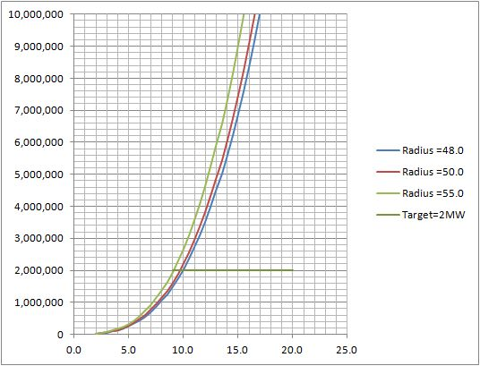

The energy flowing in the wind is proportional to the third power of the wind and to the square of the diameter of the Blades.
Each type of Wind Turbine is designed for a fixed maximum (rated) power. All the components (Generator, Blades, DriveTrain, Tower) are designed for that power. This is the Nominal Power. In the next figure we have the plot of the Power versus the Wind, taking the Blade's radius as parameter.

Power versus Wind Speed for various radius of the Blades.
The crossing of the Target Power (=Nominal Power) with the selected curve for our radius, give us the "Nominal Wind".
It is apparent from the picture above that we would like to have the lowest possible Nominal Wind, so our Wind Turbine will produce with low speed winds. This can be obtained with increasing values of the Blades radius.
But when the wind grows above Nominal Wind, the bigger the Blades, the bigger will be the difference between the power that can be extracted from the wind and the power that the electric generator can handle. Obviously our Wind Turbine must incorporate mechanisms to control the power that actually is extracted from the wind, that must be always equal or less than the electric generator rating.